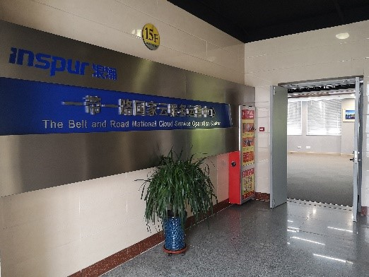
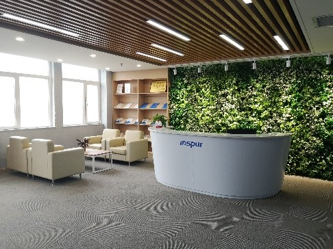
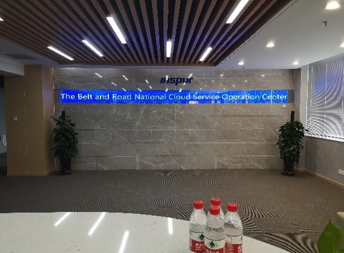
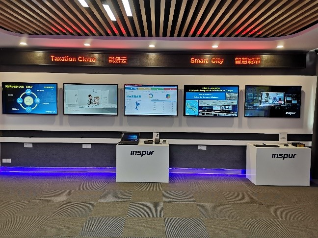
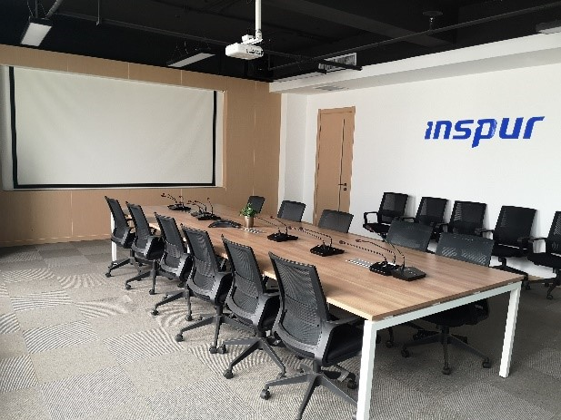

浪潮威海海外服务有限公司成立于2017年11月，注册资本100万元人民币，为浪潮软件集团旗下子公司，归属威海经济技术开发区管理委员会管辖，位于威海经济技术开发区智慧谷服务贸易产业园内，是一家提供软件技术服务的服务外贸公司。
浪潮威海海外服务有限公司按照“数据中心+云服务”的建设运营模式和思路，在一带一路沿线国家推动建设国家级数据中心，为一带一路沿线国家提供智慧税务、智慧农业、智慧教育、智慧金融、智慧家庭、智慧城市等全球领先的整体技术解决方案和应用，以硬件支撑为基础，提供数据中心运维、服务、技术支持、培训等全方位的服务，输出中国服务、中国方案和中国标准，让中国方案变成世界方案。同时，借助公共服务平台搭建，引领威海乃至全国企业“走出去”开拓国际市场，承揽国际业务。
浪潮是中国领先的云计算、大数据服务商，浪潮的服务器全球市场排名第三，云服务器排名全球第一，云服务器增速排名全球第一，全球超算Top500厂商份额排名第二，是中国500强企业。
浪潮在威海市经济技术开发区设立“浪潮一带一路国家云服务运营中心”，是响应“一带一路”倡议的创新举措，是构建“数字丝绸之路”的实践探索，也是威海落实国家大数据战略的重要着力点和突破口，对推动全市开放发展和新旧动转换具有重要意义。
在2018年4月公司开始运营到2019年年底，共接待副部级领导来访3次，司级领导来访18次，处级领导来访10次。
浪潮威海海外服务有限公司下一步的计划是将打造浪潮海外投资运营平台，推动云服务+大数据的运营模式；打造公共服务平台，抱团出海，带领威海企业乃至全国企业走出去，合理开拓国际市场，承揽国际业务；打造海外投资平台，在一带一路沿线国家推广“数据中心+云服务”的建设运营模式；打造援外培训基地，提供云计算、大数据、人工智能、智慧城市等专业技术培训和方案宣讲，为一带一路国家培训IT信息化人才。下一步的愿景是将一带一路国家云服务运营中心打造成为浪潮集团海外总部，数字丝绸之路旗舰项目，以及数字服务出口基地。
走进企业
    企业文化